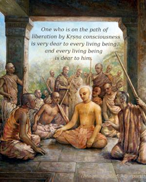
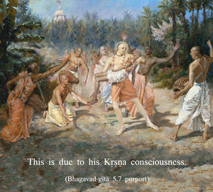

One who works in devotion, who is a pure soul, and who controls his mind and senses is dear to everyone, and everyone is dear to him. Though always working, such a man is never entangled.


One who is on the path of liberation by Kṛṣṇa consciousness is very dear to every living being, and every living being is dear to him. This is due to his Kṛṣṇa consciousness. Such a person cannot think of any living being as separate from Kṛṣṇa, just as the leaves and branches of a tree are not separate from the tree. He knows very well that by pouring water on the root of the tree, the water will be distributed to all the leaves and branches, or by supplying food to the stomach, the energy is automatically distributed throughout the body. Because one who works in Kṛṣṇa consciousness is servant to all, he is very dear to everyone. And because everyone is satisfied by his work, he is pure in consciousness. Because he is pure in consciousness, his mind is completely controlled. And because his mind is controlled, his senses are also controlled. Because his mind is always fixed on Kṛṣṇa, there is no chance of his being deviated from Kṛṣṇa. Nor is there a chance that he will engage his senses in matters other than the service of the Lord. He does not like to hear anything except topics relating to Kṛṣṇa; he does not like to eat anything which is not offered to Kṛṣṇa; and he does not wish to go anywhere if Kṛṣṇa is not involved. Therefore, his senses are controlled. A man of controlled senses cannot be offensive to anyone. One may ask, “Why then was Arjuna offensive (in battle) to others? Wasn’t he in Kṛṣṇa consciousness?” Arjuna was only superficially offensive because (as has already been explained in the Second Chapter) all the assembled persons on the battlefield would continue to live individually, as the soul cannot be slain. So, spiritually, no one was killed on the Battlefield of Kurukṣetra. Only their dresses were changed by the order of Kṛṣṇa, who was personally present. Therefore Arjuna, while fighting on the Battlefield of Kurukṣetra, was not really fighting at all; he was simply carrying out the orders of Kṛṣṇa in full Kṛṣṇa consciousness. Such a person is never entangled in the reactions of work.